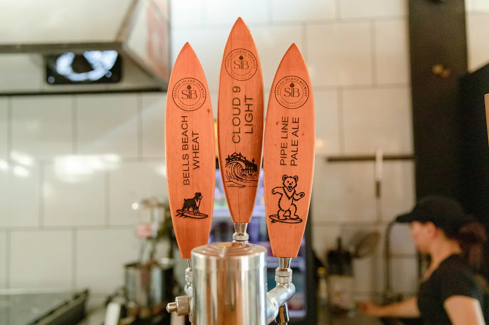
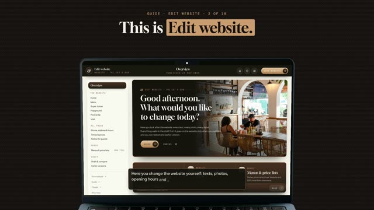
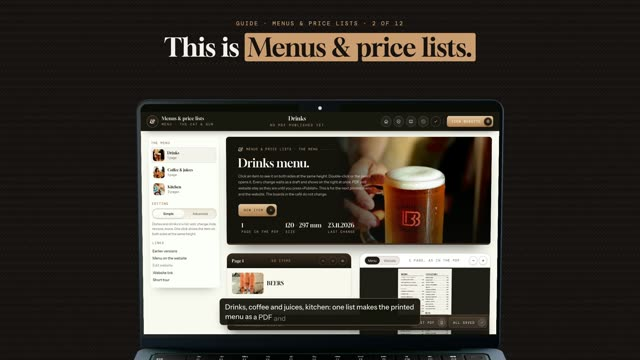
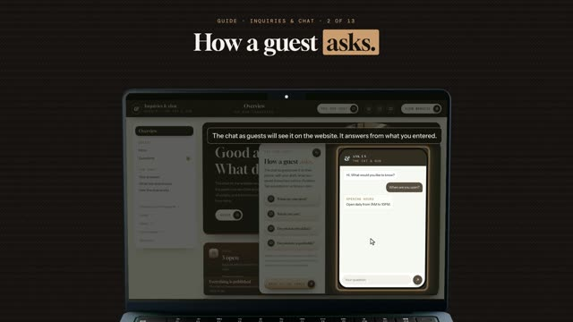
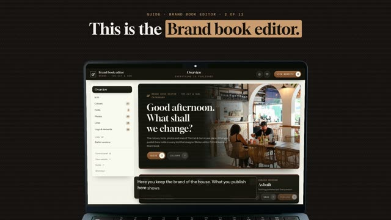
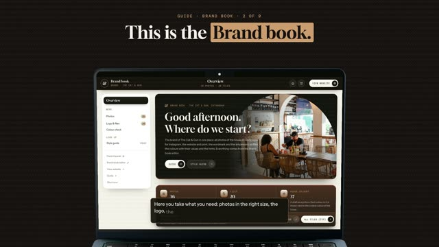
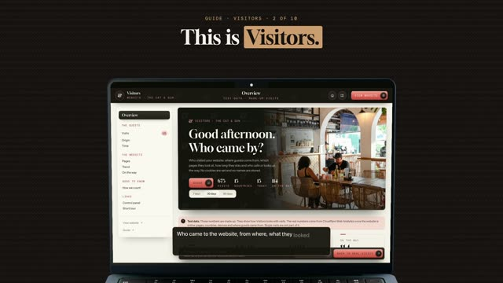

The nine tools
What each tool is for, and the guide that shows it.

Control panel
All tools in one place, each showing what is waiting today.

Edit website
Texts, photos, opening hours and a notice for guests on the six pages. Nothing goes online before you publish it.

Menus & price lists
Drinks, coffee and juices, kitchen: one list makes the printed menu as a PDF and the menu page of the website.

Inquiries & chat
The answers of the chat on the website, and the inquiries of guests who left a contact.

Brand book editor
Colours, fonts, photos, sentences, the wordmark and the other elements of the house. The other tools read the brand from here.

Brand book
Wordmark, colours, fonts and photos, ready for the print shop and for Instagram. It only reads; changes are made in the Brand book editor.

Sticker editor
The stickers of the house: change them, make new ones and get the files for the printer.

Print & feed
Coasters, beer mats, signs, chalkboards, posters, labels, banners and Instagram posts from templates, as PDFs to print and as images.

Visitors
Where your guests come from and what they read, without cookies and without names. Until there are real visits, it shows test data, marked as such.
Lesson 03 of 04 · 0 of 4 read
Next lesson: Where it runs and what it costs
Four lessons in text and pictures.

Where it runs and what it costs
Website and tools run in the Cloudflare account of The Cat & Gun, on the free plan.

How the website is built
Six pages, made from finished files, with the photos, sentences and menu of The Cat & Gun.

How the website and the tools fit together
Each fact is kept in one place. Every change waits in a draft until you publish it.